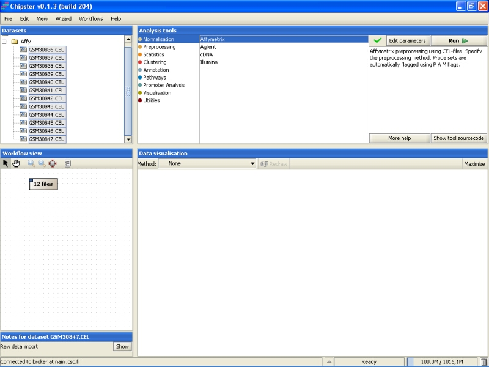
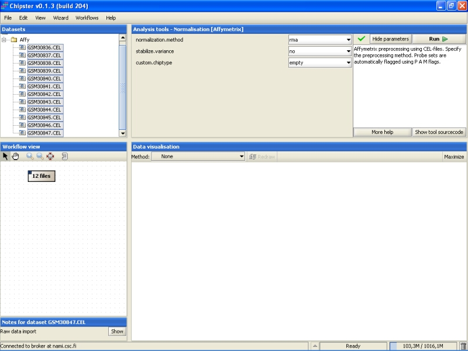
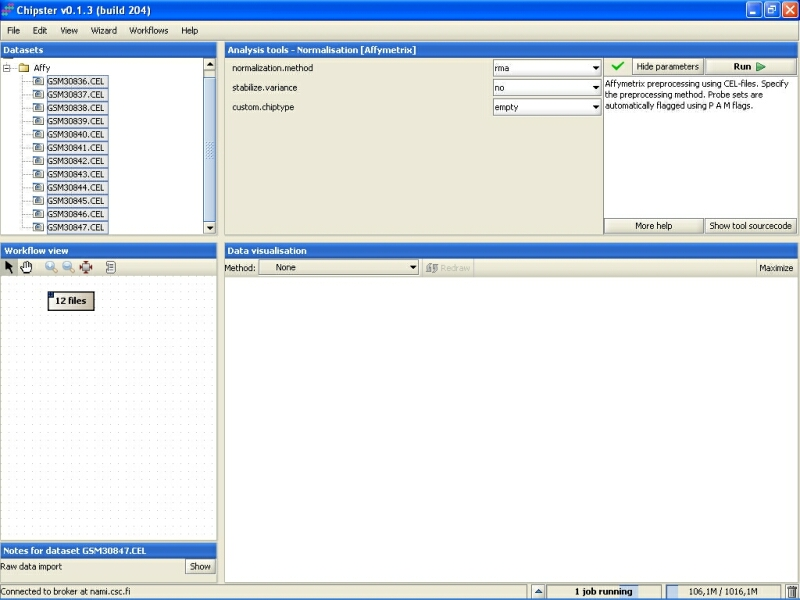
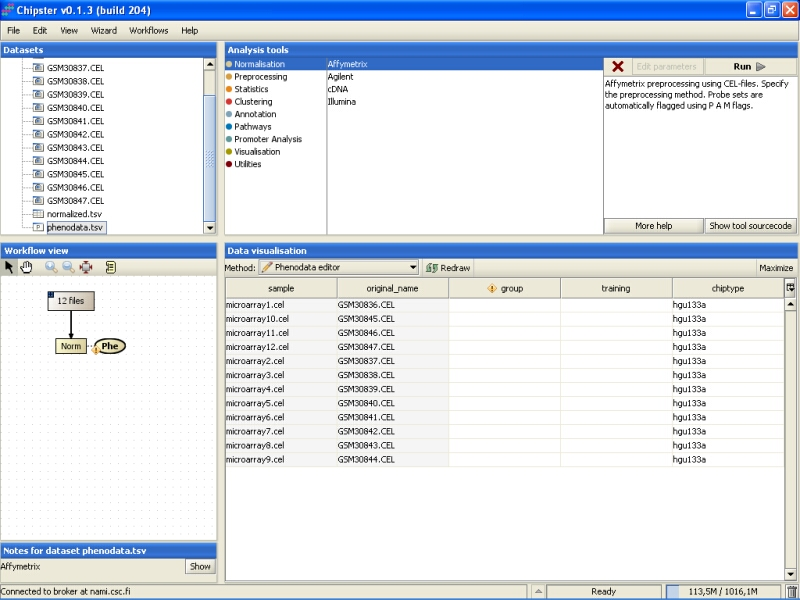
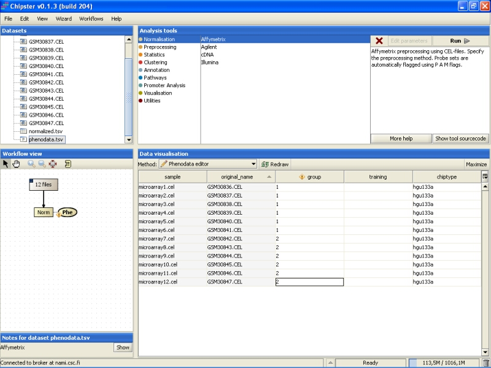

Select the files you want to normalize first. In order to normalize all chips in the same dataset together, you need to select them all (double-click on the folder). Then select Normalization / Affymetrix from the Analysis tools:
Normalization parameters can be modified by clicking the Edit parameters-button. For Affymetrix, user can select the normalization type, whether to apply variance stabilization for MAS5 or Plier preprocessing algorithms, and whether to use custom chiptype:
The selection of the preprocessing algorithm is to some degree a matter of personal choice. To give some very general views on the methods, the MAS5 algorithm seems to produce accurate, but not very precise results. On the other hand, RMA gives precise results, but they are not very accurate. In other words, MAS5 makes it hard to find differentially expressed genes, especially if their expression is low, since there is more variability in the low end of the expression than in the high end; RMA introduces a bias to the results (it is not accurate), but in many cases a small bias is a more desirable situation than having unprecise results. Precision and accuracy of Plier is somewhere between MAS5 and RMA. GCRMA takes into account the probe sequence while preprocesing, so it might take a long time to complete. Li-Wong's MBEI method is included, because it is present in dChip software, and might be familiar to some users
Variance stabilization can be used with MAS5 or Plier algorithms. It might improve their precision. Variance stabilization can not be used with other methods, since they produce log-transformed values that can be thought to be variance stabilized already.
It is a known problem with Affymetrix expression arrays that a sizeable part of the probes have been mis-annotated to wrong genes. The probes have been re-annotated according to the current knowledge to 'correct' genes in alternative CDF environments. If the user wants to preprocess the Affymetrix chips using these reannotations, then one of the custom chiptypes needs to be selected. Note that there is no cross-checking whether the selected chiptype is suitable or not, so picking the wrong annotation package might ruin the whole analysis.
After modifying the setting, click the Run-button to run the normalization. A blue bar starts moving in the lower-right corner. That indicates that a job is being run.
Normalization can take a rather long time (several minutes) depending on the type of normalization you have chosen. After the job is done, a new file (normalized.txt) should appear under the CEL-files folder in the Datasets.
Note that in the Workflow view the normalized data is coupled with phenodata. The next step would be to fill in the phenodata table, at least the group column, and describe the experimental design for the system. Group could be anything interesting. For example, if one is comparing cancer patients to their healthy controls, the controls would be the group number one and the cancer patients group number two.
Click on the phenodata in the Workflow view to select it. Go to Data visualization, and select phenodata editor from the pull down menu.
Fill in the column called group according to the experimental variable you would like to test in the further analysis. You can rearrange the phenodata rows according to the original name by clicking on the column header. Every row represents one chip, and the group column should be filled for every chip. No empty cells or strings are allowed. You should type one number in every cell.
Once the group column in the phenodata has been filled, the small exclamation mark beside the phenodata in the Workflow view disappears to signal that you are ready to analyse the dataset.
Further analysis, such as filtering, statistical testing, clustering, etc. can now be performed using this normalized dataset.